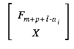

3.iv. Equations for Schubert varieties
Let X be a p by (m+p)-matrix, which we think of as
coordinates for p-planes and F. a complete
flag.
Then the condition that X lie in
Ya F.,
(the intersection of X with
Fm+p+1-ai
has dimension at least i),
is
(m+p+1-i-ai)-minors of

for each
i=1,2,...,p.
Observe that in general, this gives many more equations than the
codimension |a| of the Schubert variety
Ya F..
Using these equations and a choice of local coordinates, we may convert
the geometric statement of
Conjecture 2
into a statement about certain polynomial systems,
which will in general be overdetermined.